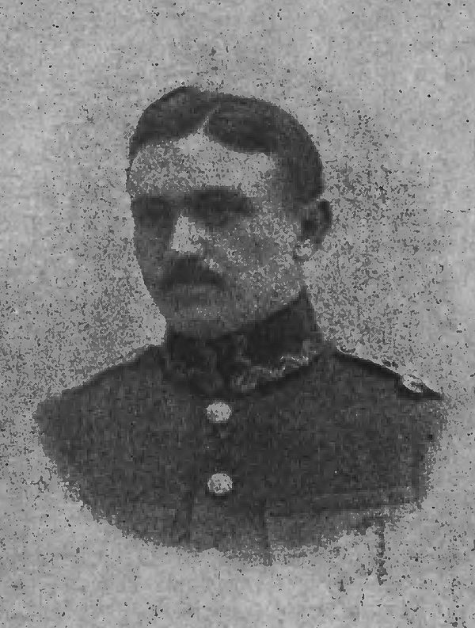

Jurków, Haus Nr. 78 · 1873–1941 · neue Geschichte aus Kirchenbüchern und Archiven
Abgeordneter und Gemeindevorsteher aus Jurków
Zwei Söhne von Sebastian und Rozalia Łaskuda aus Haus Nr. 78 in Jurków gingen in die Geschichte der ganzen Gegend ein. Der eine saß in den Parlamenten in Lemberg und Warschau, der andere leitete die Gemeinde Dobra in den schwersten Jahren.
Mit Hilfe von Claude aus dem polnischen Original übersetzt. Zitate aus den Kirchenbüchern gebe ich im Original wieder, mit Übersetzung.
Im Haus Nr. 78 in Jurków lebten Sebastian Łaskuda und Rozalia, geb. Fudalej. Sie heirateten im Januar 1871. Sebastian war der Sohn von Jan, der im Buch als ⅛ Vollbauer eingetragen war, also als Bauer auf einem Achtel einer einstigen Bauernstelle. Im Haus Nr. 78 kamen acht ihrer Kinder zur Welt. Zwei Söhne gingen in die Geschichte von Jurków und der ganzen Gemeinde ein: der älteste, Michał, und der zweitjüngste, Szymon.
Aus dem Taufbuch von Jurków, 26. September 1873
78 · Michael · Obst. Theresia Smoleń · Sebastianus fil. legit. Joannis Łaskuda ⅛ Cm. et Agathae Lach · Rosalia fil. legit. Nicolai Fudalej ¼ Cmet. et Theclae Mitek · Michael Walczak, Cunegundis Antonii Podgórni
Haus Nr. 78. Michał, geboren am 25. September. Hebamme: Teresa Smoleń. Vater: Sebastian, Sohn des Jan Łaskuda, ⅛ Vollbauer, und der Agata, geb. Lach. Mutter: Rozalia, Tochter des Mikołaj Fudalej, Viertelbauer, und der Tekla, geb. Mitek. Paten: Michał Walczak und Kunegunda, Frau des Antoni Podgórni.
Jurków, Taufen 1840–1892 · Sign. 4268/3570 · Scan 045 · Scan ansehen ↗
Taufpatin des künftigen Abgeordneten war höchstwahrscheinlich Kunegunda, geb. Przybytek, aus dem Haus Nr. 2, die Tochter des herrschaftlichen Försters und meine Urururgroßmutter. Von ihrem Vater erzählt die Geschichte „Der Förster aus Dobra“, von der Hebamme Teresa Smoleń die Geschichte „Hebammen ohne Ausbildung“.
Der Abgeordnete Michał Łaskuda
Michał war Bauer in Jurków. Bis 1914 war er viele Jahre Gemeindevorsteher („wójt“) des Dorfes und Vorsitzender des Aufsichtsrats der örtlichen Stefczyk-Kasse, einer genossenschaftlichen Darlehenskasse für Bauern. In den Jahren 1913–1914 saß er als Abgeordneter des Wahlbezirks Limanowa im galizischen Landtag in Lemberg. Er gehörte der Polnischen Volkspartei (PSL) an. Im Ersten Weltkrieg diente er in der österreichischen Armee, im Infanterieregiment Nr. 20, an der italienischen und an der russischen Front. Dasselbe Regiment taucht seit den 1830er-Jahren immer wieder in den Büchern der Pfarrei auf. Davon erzählt die Geschichte „Soldaten des Kaisers“.
Nachdem Polen die Unabhängigkeit wiedererlangt hatte, wurde er 1919 in den Verfassunggebenden Sejm gewählt, auf der Liste der PSL „Piast“ von Wincenty Witos. Er arbeitete in den Ausschüssen für öffentliche Arbeiten und für Wasserwirtschaft. 1922 zog er in den Sejm der ersten Wahlperiode ein, für einen Wahlkreis, der die Kreise Nowy Sącz, Limanowa, Bochnia und Wieliczka umfasste. 1923 verließ er die Partei „Piast“ und war danach im Bauernbund (Związek Chłopski) tätig, ab 1926 in der Bauernpartei (Stronnictwo Chłopskie). Er schrieb für die Wochenzeitung „Piast“. Er starb am 29. April 1929 in Jurków und wurde dort begraben.
Sein Foto bewahrt die Datenbank „Parlamentarzyści“ (Parlamentarier) der Sejm-Bibliothek auf. Wir wissen nicht, wer es aufgenommen hat und unter welchen Bedingungen man es vervielfältigen darf, deshalb kopieren wir es hier nicht.
Gemeindevorsteher Szymon Łaskuda
Szymon wurde am 17. September 1885 geboren, ebenfalls im Haus Nr. 78. 1930 kandidierte er für den Sejm auf der Liste des Parteilosen Blocks für die Zusammenarbeit mit der Regierung, errang aber kein Mandat. Die Zeitung „Głos Podhala“ (Stimme des Podhale) führte ihn auf dem letzten, zwölften Listenplatz: „Łaskuda Szymon, 45 Jahre, Bauer, Jurków“.
Als 1934 die Dörfer Dobra, Jurków, Porąbka, Gruszowiec, Chyszówki, Półrzeczki und Wilczyce zu einer Sammelgemeinde Dobra zusammengelegt wurden, wurde Szymon Łaskuda ihr erster Gemeindevorsteher. Er war es noch während der deutschen Besatzung, als der Gemeindevorsteher zwischen den Besatzern und den Bewohnern vermitteln musste.
Im Januar 1941 verhaftete ihn die Gestapo in Jurków unter dem Vorwurf, der Untergrundorganisation Związek Czynu Zbrojnego (Bund der bewaffneten Tat) anzugehören. In derselben Sache kam der Pfarrer von Dobra, Edward Wojtusiak, ins Gefängnis. Szymon Łaskuda starb am 23. Dezember 1941 im Konzentrationslager Buchenwald, als Häftling Nummer 5016.
Pfarrer Wojtusiak überlebte den Krieg und war bis 1980 Pfarrer von Dobra. Er gründete ein Pfarrmuseum und ein Pfarrarchiv und schrieb die Geschichte der Pfarrei nieder. Höchstwahrscheinlich stammen aus seinem Artikel über die Sachsenzeit (die Herrschaft der sächsischen Könige in Polen) die Geschichten „Der gehäufte Scheffel“ und „Einundvierzig Vorwürfe“.
Noch ein Łaskuda
Aus Jurków stammte auch Walenty Łaskuda, geboren am 5. Januar 1893. Als Leutnant des 11. Infanterieregiments fiel er am 8. August 1920 bei Dorohusk im Krieg gegen die Bolschewiki. Posthum wurde er mit dem Silbernen Kreuz des Ordens Virtuti Militari ausgezeichnet. Ob er mit dem Abgeordneten und dem Gemeindevorsteher verwandt war, ließ sich nicht feststellen.

Wie sicher ist das
- SicherDie Taufen von Michał und Szymon sowie die Trauung ihrer Eltern. Einträge mit den Scans verglichen. Michałs Abgeordnetenmandate, nach der Sejm-Bibliothek. Szymons Tod in Buchenwald, nach dem Totenbuch des Lagers.
- WahrscheinlichDass die Patin von 1873 Kunegunda, geb. Przybytek, aus dem Haus Nr. 2 ist. Dass der Autor des Artikels über die Sachsenzeit der Pfarrer von Dobra, Edward Wojtusiak, ist.
- Noch zu prüfenDer genaue Tag von Szymons Verhaftung: Lokale Darstellungen nennen den 19. oder etwa den 21. Januar 1941.
Was wir nicht wissen
- Seit wann genau Szymon Gemeindevorsteher war und ob er vorher Vorsteher von Jurków allein gewesen war.
- Wie die Brüder ihre unterschiedlichen politischen Wege sahen: Michał in der Bauernbewegung, Szymon auf der Liste des Regierungsblocks.
- In welcher Beziehung Leutnant Walenty Łaskuda zur Familie aus dem Haus Nr. 78 stand.
Quellen
- Taufbücher von Jurków, Sign. 4268/3570 (Scans 045, 061); Traubuch von Jurków, Sign. 4268/4530 (Scan 041); auf der Website Metryki der Polnischen Genealogischen Gesellschaft (PTG).
- Biblioteka Sejmowa (Sejm-Bibliothek), Datenbank „Parlamentarzyści“: Michał Łaskuda; Wikipedia: Michał Łaskuda; J. Giza, „Sądeczanie w Sejmie RP II Rzeczypospolitej“ (Abgeordnete aus der Region Sącz im Sejm der Zweiten Polnischen Republik), Almanach Sądecki 1997.
- „Głos Podhala“ 1930, Nr. 45, in der Sądecka Biblioteka Cyfrowa (Digitale Bibliothek der Region Sącz).
- Gemeinde Dobra: „Codzienność mieszkańców“ (Der Alltag der Bewohner), „85 lat temu, 5 września 1939 roku“ (Vor 85 Jahren, am 5. September 1939), „Stare dokumenty“ (Alte Dokumente); P. Tokarczyk, „Konspiracja 1939–1945 na terenie gminy Dobra“ (Der Untergrund 1939–1945 im Gebiet der Gemeinde Dobra, 2022).
- Totenbuch KL Buchenwald: Szymon Łaskuda.
- Wikipedia: Walenty Łaskuda.